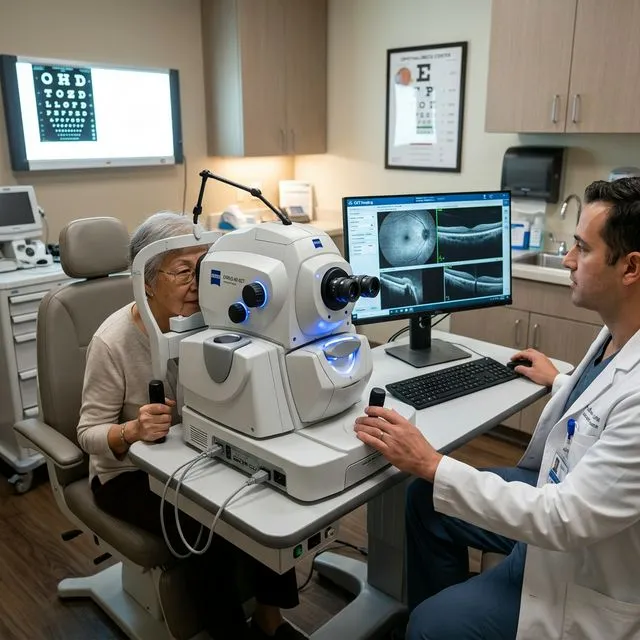
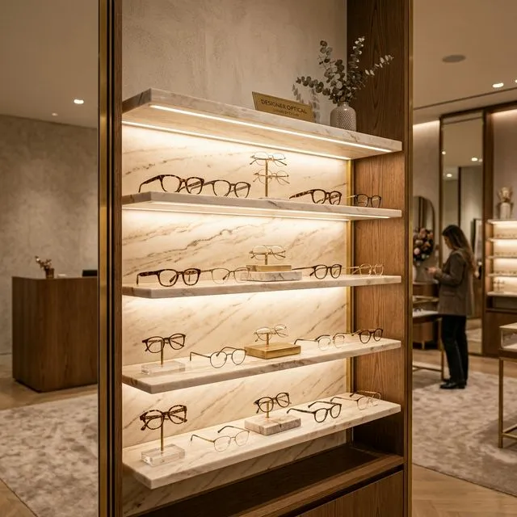
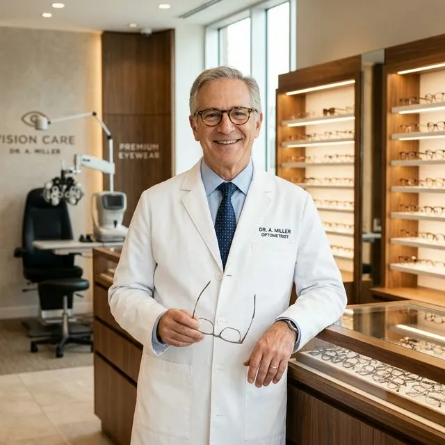
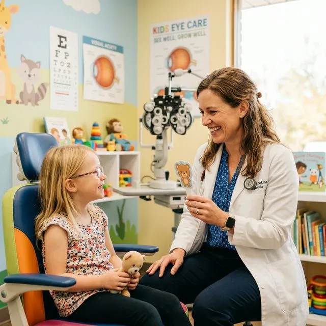

7 Essential Habits for Maintaining Healthy Eyes
Daily lifestyle adjustments, optimal nutrition, and ocular hygiene tips recommended by top eye specialists.
Read ArticleWhere medical expertise, advanced technology, and compassionate care come together to create a better vision experience.
Multi-layered 40-point visual acuity scans, ocular pressure checks, and preventative diagnostics.
State-of-the-art femtosecond LASIK, wavefront ablation, and customized refractive solutions.
Expert therapy for dry eye syndrome, meibomian dysfunction, glaucoma, and macular preservation.
Tailored diagnostic roadmaps, dedicated doctor consultations, and holistic visual wellness support.
Explore a comprehensive range of eye care services delivered with precision, innovation, and clinical expertise.

Detailed assessments for lifelong vision health, including digital retinal topography and acuity mapping.
Learn MoreAdvanced evaluation and premium intraocular lens surgical replacement options.
Learn More
Specialized monitoring of retinal conditions using micron-resolution 3D OCT scanning technology.
Learn More
Personalized solutions for clearer vision through laser refractive procedures and custom optical lenses.
Learn MoreWe embrace modern diagnostic equipment and advanced clinical techniques to support accurate assessments and personalized treatment planning.
Provides micro-layer retinal cross-sections for early diagnosis of glaucoma, macular edema, and optic nerve degeneration.
Maps thousands of elevation points across the cornea to craft 100% customized laser vision treatment profiles.
Applies localized heat and gentle peristaltic motion to restore natural meibomian gland oil flow for chronic dry eyes.
Board-certified ophthalmologists and optometrists with extensive clinical surgical practice.
State-of-the-art diagnostic suites designed for precision visual acuity and corneal mapping.
Custom healthcare strategies crafted around your lifestyle, optical requirements, and vision goals.
In-depth 40-point eye examinations covering binocular alignment, intraocular pressure, and retinal health.
Boutique relaxation suites, calm diagnostic spaces, and personalized patient concierge assistance.
Continuous post-consultation care, digital portal monitoring, and direct specialist communication.
Meet our dedicated eye care professionals, committed to delivering thoughtful guidance, clinical expertise, and personalized attention.

Specializing in femtosecond LASIK, custom corneal wavefront ablation, and complex cataract procedures.

Expert in scleral lens fitting, severe keratoconus management, and specialty ocular surface rehabilitation.

Pioneer in pediatric binocular vision therapy, amblyopia treatment, and overnight Ortho-K myopia control.
Schedule your eye care appointment online or through our concierge patient service team.
Receive a comprehensive eye assessment using 3D OCT scanning and digital wavefront topography.
Explore personalized treatment options, custom optics choices, or laser correction roadmaps.
Continue with dedicated follow-up support, periodic visual checkups, and optical maintenance.
Every patient journey is unique. Discover experiences shared by individuals who have trusted us with their vision care.
"The laser vision procedure with Dr. Rostova changed my daily routine completely. The diagnostic precision before surgery gave me total peace of mind."
"After years of suffering from digital screen dry eye, the LipiFlow treatment at Neo Ocular relieved my discomfort within days. Exceptional clinical team!"
"Dr. Lin introduced Ortho-K lenses for our 10-year-old son. His myopia progression halted completely, and he no longer needs specs at school."
"The frame atelier selection is unparalleled. I found a pair of titanium handcrafted specs that perfectly suit my prescription and personal style."
 Oct 03, 2026
Oct 03, 2026
Daily lifestyle adjustments, optimal nutrition, and ocular hygiene tips recommended by top eye specialists.
Read Article Sep 28, 2026
Sep 28, 2026
Recognizing subtle shifts in visual acuity, night glare, and eye pressure before vision loss occurs.
Read Article Sep 18, 2026
Sep 18, 2026
How specular blue-blocking optics and micro-breaks alleviate fatigue during long workstation hours.
Read ArticleTake the first step towards better eye health with personalized consultations and professional eye care.